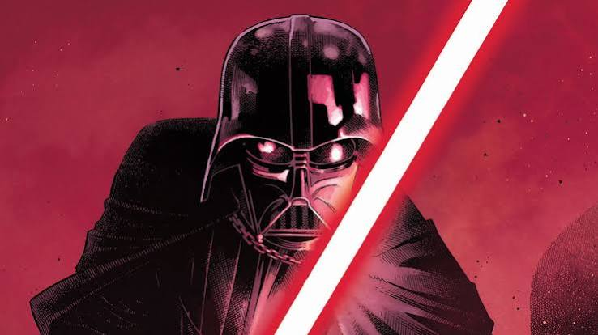
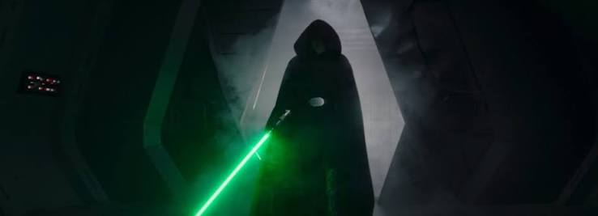
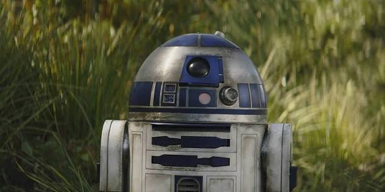
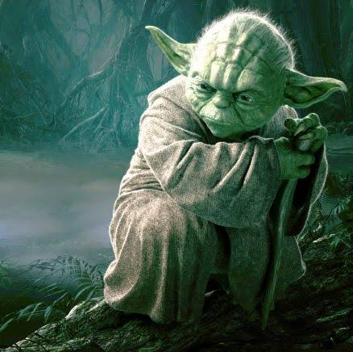
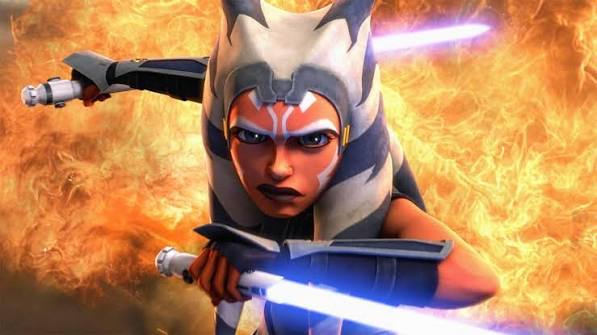
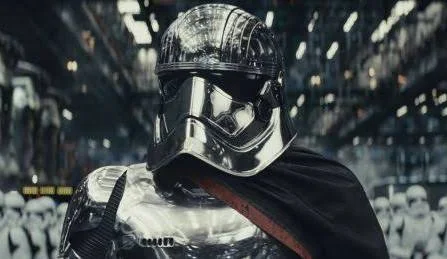

1. Anakin Skywalker
Darth Vader é o famoso Lorde Sith e principal antagonista da trilogia original da franquia de Star Wars.

2. Luke Skywalker
Luke Skywalker é o herói central da trilogia original da saga Star Wars, que evolui de um simples fazendeiro no planeta Tatooine até se tornar um lendário Mestre Jedi.

3. R2 D2
R2-D2 é um dos personagens mais icônicos da franquia Star Wars, funcionando como um droide astromecânico espirituoso e corajoso.

4. Mestre Yoda
O sábio e poderoso grão-mestres da Ordem Jedi, mestre nas artes da Força.

5. Ahsoka Tano
Ahsoka Tano é uma personagem de Star Wars que foi introduzida como a jovem aprendiz (padawan) de Anakin Skywalker no filme animado Star Wars: The Clone Wars (2008).

6. Capitã Phasma (Stormtroopers)
A Capitã Phasma é uma comandante implacável das tropas de stormtroopers na Primeira Ordem dentro da franquia Star Wars.
Arquivos do Império
A Força em Star Wars é um campo de energia metafísico e onipresente criado por todos os seres vivos que une toda a galáxia.
Também chamado de Ashla: Em algumas filosofias antigas da galáxia, o lado luminoso era conhecido popularmente como Ashla, enquanto o lado sombrio era chamado de Bogan.
Não é mais fraco, mas exige mais: Segundo o Mestre Yoda, o lado luminoso não é inferior em poder ao lado sombrio, mas a escuridão é "mais rápida, mais fácil e mais sedutora". Dominar a luz exige controle emocional profundo e paciência.
Habilidade de curar cristais kyber: Usuários dedicados do lado luminoso conseguem realizar o feito de "curar" um cristal kyber que foi corrompido pelo lado sombrio, tirando seu sofrimento e transformando-o em um sabre de luz branco (como fez Ahsoka Tano).
Foco defensivo: As técnicas e posturas do lado luminoso priorizam a defesa, a proteção de inocentes e a preservação da vida, e não o ataque agressivo.
A importância da meditação: Os Jedi precisam meditar com frequência para esvaziar a mente de sentimentos como raiva, medo e orgulho, que abrem brechas para o lado sombrio.
O Sangramento do Cristal Kyber: Os sabres de luz vermelhos não são naturais. Eles ficam vermelhos através de um ritual macabro onde o usuário do lado sombrio despeja todo o seu ódio e dor em um cristal que pertencia ao lado luminoso, fazendo o cristal "sangrar".
O Ódio pelo Sabre Roxo: Os Sith consideram o sabre de luz roxo (usado por Mace Windu) um insulto supremo. Quem usa essa cor geralmente domina a técnica Vaapad, que permite canalizar e refletir o lado sombrio do oponente sem corromper a própria alma.
Nome original no Brasil: Por muitos anos, a tradução clássica era "Lado Negro da Força", mas mudou oficialmente para "Lado Sombrio" com o lançamento das novas trilogias e adaptações modernas.
A arma elegante de uma era mais civilizada, alimentada por cristais Kyber sintonizados com seu portador.
Origem transparente: Inicialmente, os cristais Kyber são incoloros e transparentes. Eles ganham uma coloração definitiva apenas quando se sintonizam com o seu respectivo Jedi.
O "sangue" do cristal Sith: Os cristais dos Sith ficam vermelhos porque esses usuários do Lado Negro dominam o cristal à força. O sofrimento do cristal faz com que ele "sangre".
O significado do branco: Os sabres brancos de Ahsoka Tano surgiram após ela "curar" cristais vermelhos que havia tomado de um Inquisidor Imperial.